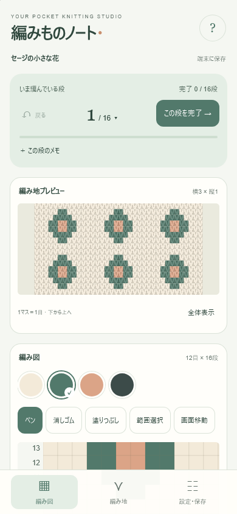

好きな模様をつくる
ペン、消しゴム、塗りつぶし、範囲のコピーや反転。白紙からも、写真の切り抜き・減色からも始められます。
A LITTLE STUDIO, IN YOUR POCKET
for iPhone · 無料Webアプリお気に入りの色を並べて、
編み地を眺めて、また一段。
あなたのペースで編むための、小さな道具。
ストアへの登録も、アカウントも不要です。
iOS 16以降のSafari向け · 試用版 v0.1.2

EVERYTHING FOR YOUR NEXT ROW
ペン、消しゴム、塗りつぶし、範囲のコピーや反転。白紙からも、写真の切り抜き・減色からも始められます。
編み図の1マスは、プレビューの1目。同じデータから描くので、色や繰り返しもそのまま。1段目は一番下です。
段番号で選んで、編めたら「この段を完了」。完了チェックとメモを残せます。間違えたら1段戻って、もう一度。
NO APP STORE NEEDED
アプリファイルのダウンロードは不要。Safariから追加できます。
iPhoneのSafariで、「iPhone版を開く」をタップします。まずはサンプルの模様を試してみてください。
Safariの共有メニューを開き、「ホーム画面に追加」を選びます。項目が表示される場合は「Webアプリとして開く」をオンにして「追加」。
ホーム画面の編みものノートをタップ。最初にオンラインで開き、設定画面に「オフラインで使う準備ができました」と出れば、通信がない場所でも編めます。
YOUR PATTERNS, YOUR PACE
編み図、毛糸、進捗、メモは端末内へ自動保存。作品や取り込んだ画像を、アプリ独自のサーバーへ送信しません。
大切な作品は、設定の「作品を書き出す」からファイルにも保存してください。Safariのデータ消去や端末の空き容量不足で保存内容が失われる場合があります。
Safariとホーム画面アプリで同じ作品が見えない場合は、書き出したファイルを読み込んでください。クラウド同期はありません。
標準的なiPhoneの縦画面を想定し、横幅375〜430pxを中心に設計しています。iOS 16以降のSafariを想定しています。iPhone実機での検証は未実施です。環境によって表示や保存の動作が異なることがあります。
iPhone版はSafariで動くWebアプリです。配色はセージグリーンとアプリコット。編み図は最大100目×100段、毛糸は32色、リピートは横・縦10回まで。作品の書き出しは専用JSON形式で、Android版の.pcanvasとは互換性がありません。Android版はこちら。
通常は端末内に残りますが、ブラウザーのデータ消去やストレージ管理で削除される場合があります。アプリの「設定・保存」→「作品を書き出す」でバックアップしてください。履歴は開いている間のみ保持します。
マスの色、位置、リピートは対応しています。V字の陰影はイメージで、毛糸の太さやゲージ、糸の引き加減を再現するものではありません。
GitHubの報告フォームに「iPhone Web版 v0.1.2」と、機種・iOSバージョン・起きたことを記入してください。報告にはGitHubアカウントが必要で、投稿は公開されます。
LET'S MAKE SOMETHING
無料 · 登録不要 · ホーム画面に追加できます